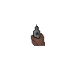

<canvas id="gc" height="600" width="600" style="background: black"></canvas>
<canvas id="gc2" height="400" width="600" style="background: black"></canvas>


<script>

let ctx = document.getElementById("gc").getContext("2d");
let ctx2 = document.getElementById("gc2").getContext("2d");
ctx2.imageSmoothingEnabled = false;

// making the line coordinates
let x = 100, y = 100;
let x3 = 300, y3 = 200, x4 = 300, y4 = 400;
let x5 = 250, y5 = 300, x6 = 400, y6 = 300;
let lx = 0, ly = 0;
let angle = 0;
let view = [];
let dir = 0;
let pa = 22.5;

document.addEventListener('keydown', (e) => {
  if (e.which == 39) {
    angle += 5;
    pa += 5;
  } else if (e.which == 37) {
    angle -= 5;
  }
  pa = angle * 0.35 + 22.5;
  if (e.which == 87) {
    dir = 'W';
  }
  if (e.which == 68) {
    dir = 'L';
  }
  if (e.which == 65) {
    dir = 'R';
  }
});
document.addEventListener('keyup', (e) => {
  if (e.which == 87 || e.which == 68 || e.which == 65) {
    dir = 0;
  }
});

// function that checks for line intersection
function IsIntersecting(x1, x2, x3, x4, y1, y2, y3, y4) {

    let denominator = ((x2 - x1) * (y4 - y3)) - ((y2 - y1) * (x4 - x3));
    let numerator1 = ((y1 - y3) * (x4 - x3)) - ((x1 - x3) * (y4 - y3));
    let numerator2 = ((y1 - y3) * (x2 - x1)) - ((x1 - x3) * (y2 - y1));

    let r = numerator1 / denominator;
    let s = numerator2 / denominator;

    let collision = (r >= 0 && r <= 1) && (s >= 0 && s <= 1);

    // checks if the starting point is inside of a wall
    if ((x1 == x3 && x1 == x4 || y1 == y3 && y1 == y4)
     && !(x1 > Math.min(x3, x4) && x1 < Math.max(x3, x4) || y1 > Math.min(y3, y4)
     && y1 < Math.max(y3, y4))) return false;
    if (denominator == 0) return numerator1 == 0 && numerator2 == 0;
    return collision;
}

setInterval(() => {
  ctx.clearRect(0, 0, 600, 600);
  ctx2.clearRect(0, 0, 600, 400);
  if (dir == 'W') {
    x += Math.cos(pa * Math.PI / 180);
    y += Math.sin(pa * Math.PI / 180);
  } else if (dir == 'L') {
    x += Math.cos((pa + 90) * Math.PI / 180);
    y += Math.sin((pa + 90) * Math.PI / 180);
  } else if (dir == 'R') {
    x += Math.cos((pa - 90) * Math.PI / 180);
    y += Math.sin((pa - 90) * Math.PI / 180);
  }
    for (let i = angle; i < angle + 128; i++) {
      ctx.fillStyle = 'grey';
      ctx.strokeStyle = 'grey';
      // makeing the side walls
      ctx.fillRect(0, 0, 600, 100);
      ctx.fillRect(0, 0, 100, 600);
      ctx.fillRect(500, 100, 100, 500);
      ctx.fillRect(100, 500, 500, 100);
      //making the inner walls
      ctx.beginPath();
      ctx.moveTo(x3, y3);
      ctx.lineTo(x4, y4);
      ctx.moveTo(x5, y5);
      ctx.lineTo(x6, y6);
      ctx.stroke();
      lx = x;
      ly = y;
      let theta = i * 0.35;
      let length = 0;

      let hit = false;
      ctx.strokeStyle = '#FFFFFF';

      while(!hit) {

        // lengthens the line
        lx += Math.cos(theta * Math.PI / 180) * length;
        ly += Math.sin(theta * Math.PI / 180) * length;

        // checks if the lines should end
        if (lx > 500 || lx < 100 || ly > 500 || ly < 100 || length > 3 || IsIntersecting(x, lx, x3, x4, y, ly, y3, y4)
      || IsIntersecting(x, lx, x5, x6, y, ly, y5, y6)) {
          ctx.beginPath();
          ctx.moveTo(x, y);
          ctx.lineTo(lx, ly);
          ctx.stroke();
          hit = true;
          view[i - angle] = length;
        }

        length += 0.01;
      }
    }
    ctx2.fillStyle = 'tan';
    ctx2.fillRect(0, 200, 600, 400);

    // draws the 3d scene by using the length of the vectors sent out
    // and making each one a slat with coloring also based on distance
    for (let i = 0; i < 128; i++) {
      let color = 127.5 / view[i] * 2;
      ctx2.fillStyle = 'rgb(' + color + ',' + color + ',' + color + ')';
      let offset = (398 - ((3 - view[i]) * 200)) / 2;
      ctx2.fillRect(i * (600/128), 0 + offset , (600/128) + 1/*+one makes texture smooth*/, 400 - offset * 2);
      //ctx2.fillStyle = 'tan';
      //ctx2.fillRect(i * (600/128), 400 - offset, (600/128) + 1, 400);
    }
    ctx2.drawImage(document.getElementById('gun'), 68, 110, 500, 500);
}, 1000/60);

</script>
